14.07.2008 понедельник
Утро выдалось пасмурное и оно вполне соответствовало нашему настроению. Клеши! Причем очень много. За этот и 2 последующих дня мы сняли с себя от 3 до 7 клещей каждый. Маленькие такие и гадкие. Какое уж тут настроение. Я такого никогда не видел. Судя по уменьшению количества укусов в 2 последующих дня и полному отсутствию их потом, причиной стала именно эта неудачная стоянка. Но делать нечего - поехали.
Проезжаем городок с неблагозвучным названием Mandal. Разметка национального маршрута №1 настолько неочевидна, что где-то в городе, на одном из перекрестков мы его теряем. Большого желания тратить время на поиски нет, тем более, что веломаршрут этот совсем не велодорожка а скорее направление движения, как нам кажется.
По тихой дорожке доезжаем до перекрестка с трассой E39. Обозначения на ней зеленого цвета, но дело даже не в этом, она очень узкая и очень загруженная. Становится понятно, что мы зря свернули с веломаршрута. Решаем проехать несколько километров по E39 и опять выйти на маршрут. Поворачиваем на 408 дорогу и вскоре опять находим разметку маршрута, который ведет в дремучий норвежский лес.
Грунтовка поднимается по крутым каменистым склонам, поросшим мхами. Огромные ели практически на пропускают вниз свет. Появляется ощущение нереальности происходящего. Кажется, что вот сейчас из-за камня появится тролль. Жаль, что фотографий хороших не получилось, но в памяти эти виды остались надолго. Не зря норвеги проложили маршрут именно здесь, молодцы.
Выкатываемся из леса опять на 408 дорогу, вот и городок Lindesnes, расположенный по обе стороны узкого пролива. Купаюсь на городском пляже, спутники меня не поддерживают в этом начинании. Рядом с пляжем огромный туалет, чистый аж до блеска, с отличной новой сантехникой, теплой водой и розеткой, и ни одного человека вокруг.
Наш путь лежит по 460 дороге, небольшие подъемы и спуски, погода и настроение потихонечку приходят в норму Проезжаем городок Høllen, через несколько километров интересное место - узкий пролив соединяет два Grønsfjorden и Lenefjorden
Городская набережная и активное судоходство:

Краски дня:

Движемся дальше по 401 дороге. Один из видов южной Норвегии:

Памятуя о прошлой ночевке, решили в этот раз с остановкой не торопиться, а поискать место получше и у нас это получилось. Засыпали мы под шум горной реки в окружении настоящей норвежской красоты.
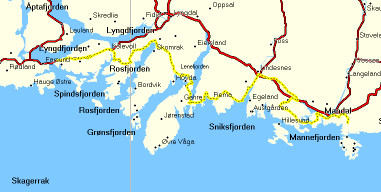
За день проехали 83 километра. трек этого дня: Трек 2008-07-14.gdb
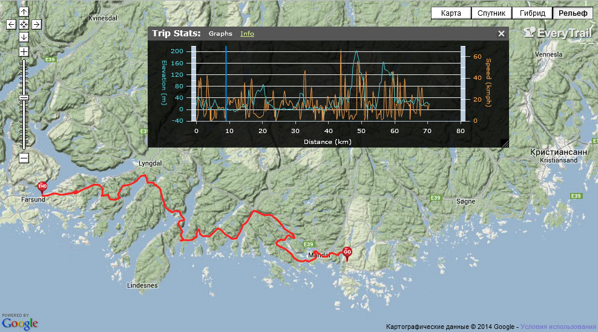
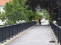 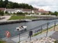 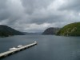 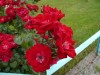 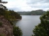 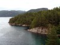 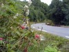 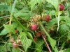 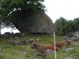 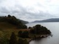